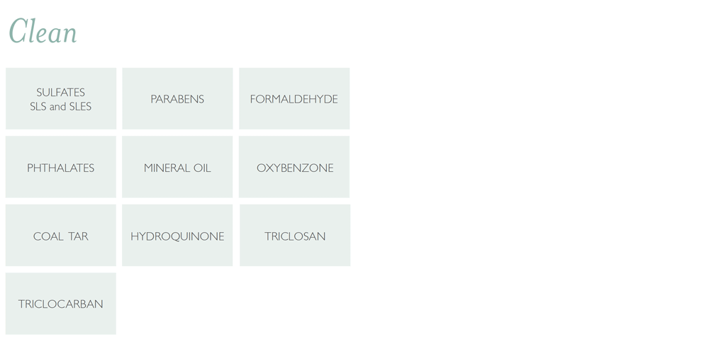

Hyperclean Beauty
the milk + honey difference
In addition to the ingredients most commonly excluded in most clean beauty products, we exclude many ingredients such as PEGs, silicones, and the 1300+ ingredients banned in the EU.
Every ingredient is strictly vetted with our no-comprimise approach to sourcing; evaluating safety, sustainability, and EWG score (toxicity).
Absolutely No artificial fragrances or filler ingredients.
Only safe preservatives.
Three Easy Ways to Switch
Start with products you use on an everyday basis, such as hand soap, body wash, and deodorant and replace them as you run out with a clean version. Try one of the milk + honey products below.
Choose Aluminum-free Deodorant

Choose Products Both Safe and Effective
Switch an Everyday Product

"It wasn't enough to create hyperclean, safe products. I wanted to create something beautiful and luxurious — something I could feel good using every day."
Alissa Bayer, Founder